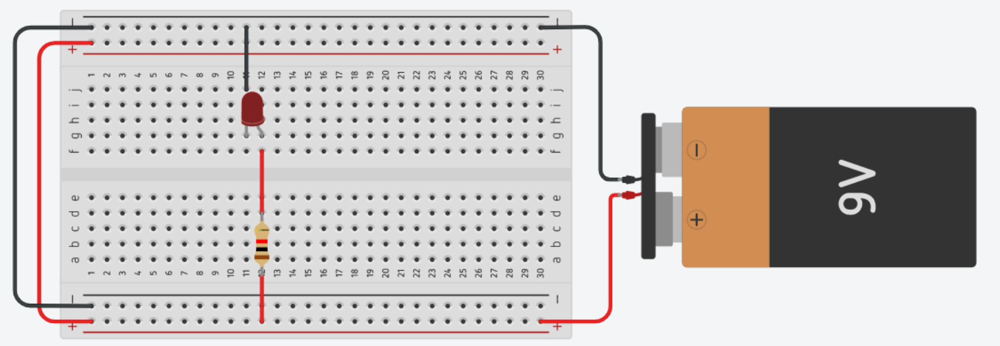
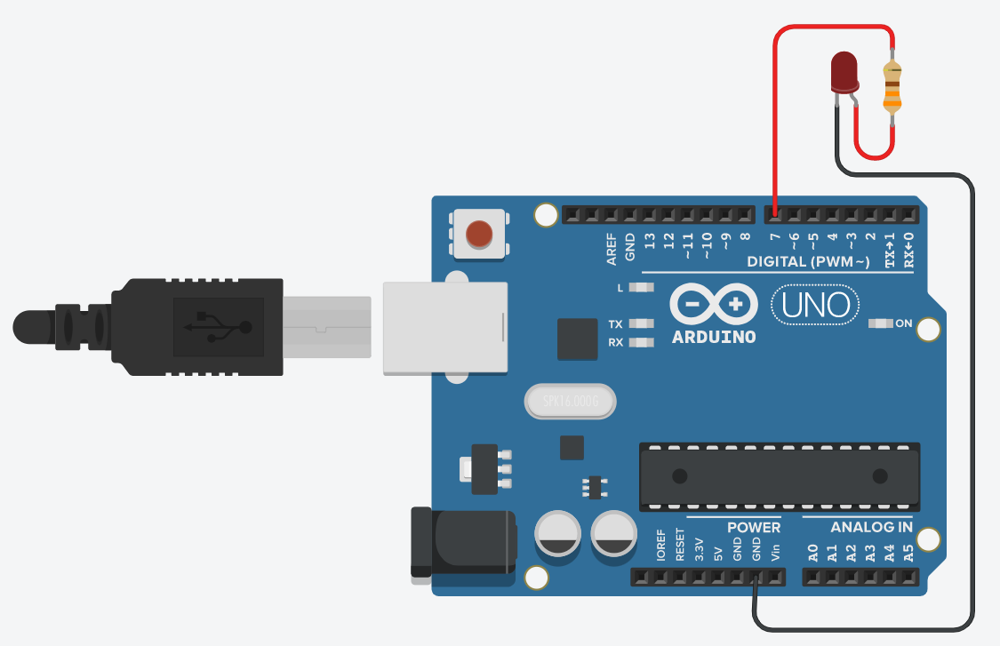

Aprenda a Ligar um LED
Usando uma protoboard e uma bateria de 9V
Para começar, você precisará dos seguintes materiais: um LED vermelho, um resistor de 220 ohm, uma protoboard e uma bateria de 9V. Primeiro, conecte o terminal positivo da bateria à protoboard e o terminal negativo também. Agora, pegue o LED e identifique o terminal mais longo, que é o positivo (ânodo), e o terminal mais curto, que é o negativo (cátodo). Conecte o terminal positivo do LED a um dos trilhos da protoboard usando um jumper. Em seguida, conecte o resistor de 220 ohm ao mesmo trilho. Agora, conecte o terminal negativo do LED ao outro trilho da protoboard usando outro jumper. Por fim, conecte a extremidade livre do resistor ao mesmo trilho do terminal negativo do LED. Pronto! O LED deve acender assim que a bateria for conectada.
Usando um Arduino Uno R3
Se você preferir usar um Arduino Uno R3 para ligar o LED, siga os seguintes passos: primeiro, conecte o Arduino ao seu computador usando um cabo USB. Em seguida, abra o software Arduino IDE no seu computador. Dentro do IDE, selecione a placa "Arduino Uno" e a porta correta do Arduino na seção "Ferramentas". Agora, vamos conectar o LED e o resistor ao Arduino. Conecte o terminal positivo do LED ao pino digital 7 do Arduino e o terminal negativo ao resistor de 220 ohm. Em seguida, conecte a outra extremidade do resistor ao terra (GND) do Arduino. Uma vez que tudo esteja conectado, faça o upload do seguinte código para o Arduino:
void setup() {
pinMode(7, OUTPUT);
}
void loop() {
digitalWrite(7, HIGH);
delay(1000);
digitalWrite(7, LOW);
delay(1000);
}
O código acima fará com que o LED pisque em intervalos de um segundo. Agora, clique no botão "Upload" no IDE para enviar o código para o Arduino. O LED começará a piscar de acordo com o código carregado. Parabéns, você conseguiu ligar o LED utilizando um Arduino Uno R3 e a porta digital 7!
Lembre-se de que a eletricidade pode ser perigosa, portanto, tenha cuidado ao lidar com componentes eletrônicos e certifique-se de desligar a energia sempre que for fazer conexões ou desconexões.